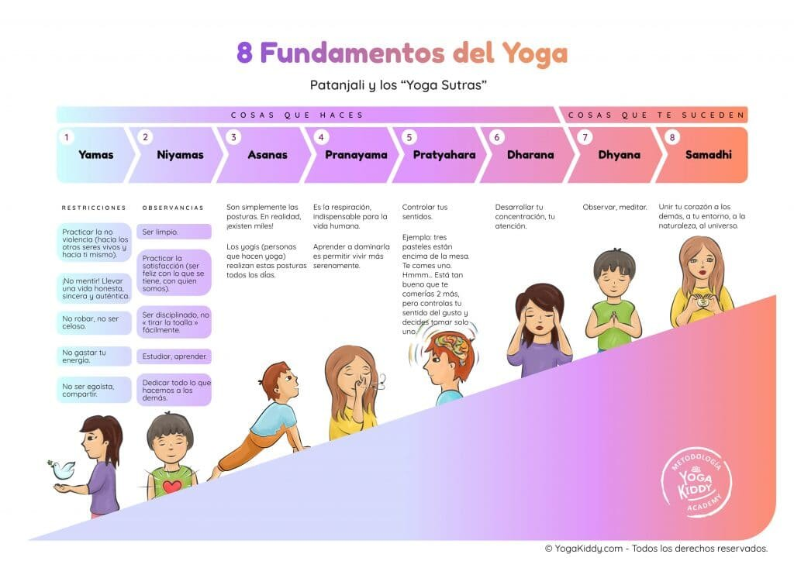

Dada su naturaleza compleja, los Yoga Sutras de Patanjali pueden ser un texto bastante abrumador: Los yoguis pasan años leyendo, contemplando, analizando y releyendo los sutras en un intento de comprender plenamente lo que Patanjali describe como la práctica del yoga. Esto puede hacer parecer que la filosofía del yoga no pueda ser enseñada a los niños por su complejidad, pero ese pensamiento está alejado de la realidad.
Filosofía del yoga adaptada para niños
Es posible simplificar los yoga sutras de Patanjali sin subestimar la capacidad de aprendizaje de los niños. Sólo hace falta el uso de palabras más sencillas, ejemplos y situaciones de la vida cotidiana, así los niños aprenden de una forma más rápida y se sienten más atraídos hacia la filosofía del yoga que, de otra manera, considerarían aburrido.
Los Yoga sutras de Patanjali
Para que los niños aprendan cada uno de los pilares del yoga de forma fácil, podemos usar como ejemplo que cada uno de los 8 sutras son ramas que forman parte de un árbol, el árbol del yoga. Las 2 primeras ramas, Yama y Niyama, tienen 5 ramitas más pequeñas cada una, las cuales forman parte del todo.
Primera rama: Yama
Los Yamas se centran en nuestro comportamiento y en cómo actuamos en este mundo. Nos dan una advertencia sobre la forma en que tratamos a otras personas, a los animales, a la tierra, a nuestras pertenencias y a los lugares a los que vamos.
Podemos simplificarlo como: “Cosas que no se deben hacer”
Ahimsa: No violencia en la acción, habla y pensamientos con los demás ni conmigo mismo; ser amable conmigo y con los demás, esto incluye personas, animales, la naturaleza, todo lo que nos rodea.
Ejemplos que se pueden usar:
- Hacia tu cuerpo: beber mucha agua, comerse toda la comida, dormir toda la noche.
- En el habla: no gritar a nadie, no decir malas palabras, no responder de forma inapropiada.
- En la acción: no golpear a los demás, respetar el espacio personal, tratar bien a las personas.
Satya: No decir mentiras; ser sincero conmigo mismo y con los demás.
Asteya: No robar; al contrario, sé generoso con lo que tienes.
Brahmacara: No malgastar la energía, usar la energía sabiamente.
Aparagraha: No seas codicioso; sé agradecido por lo que tienes. No acumular cosas innecesarias y no desear cosas que le pertenezcan a otros.
Segunda rama: Niyamas
Los Niyamas se basan en la autoconciencia. Cuando practicamos yoga, es muy importante que escuchemos a nuestros cuerpos y que comencemos a identificar realmente las señales que él nos da.
Podemos simplificarlo como: “Cosas que debemos hacer”
Saucha: Mantenerse limpio en cuerpo y mente. Esto incluye el bañarse correctamente, cepillarse los dientes.
Santosha: Ser feliz conmigo mismo y con los demás.
Tapas: Siempre trabaja duro. Tener disciplina a la hora de hacer cualquier cosa.
Svadhyaya: Estudiar es importante, pero no solo el estudio académico, también el estudio del ser. Aprender a conocerte en profundidad.
Ishvara pranidhana: Entregarse ante Dios, honrar lo Divino.
El resto de ramas o sutras los podrán conseguir en la siguiente parte, Los Yoga sutras de Patanjali: Filosofía del yoga para niños 2/2.